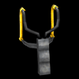

Di seguito sono elencati gli articoli che possono essere raccolti ed utilizzati nell’aula:
 Torcia Elettrica
Torcia Elettrica
La torcia elettrica ricaricabile di Jake è disponibile fin dall’inizio del gioco e non deve essere raccolta per essere utilizzata. La torcia elettrica può essere utilizzata per proiettare un fascio di luce ovunque in aula, per rivelare le fonti di illuminazione e per raccogliere oggetti. Siccome Jake tiene la torcia davanti a lui, questa non può essere utilizzata per creare fasci di luce sui quali camminare. La torcia si scarica dopo pochi secondi di utilizzo, ma può essere ricaricata scuotendola longitudinalmente per due secondi.

Fionda
La fionda può essere utilizzata per frantumare finestre o oggetti luminosi lontani. Sebbene la fionda è disponibile fin dall’inizio del gioco, le pallottole devono essere raccolte durante il gioco per utilizzarla. Le pallottole possono essere usate solo nella stanza in cui sono state trovate.
 Scatola di pallottole per la fionda
Scatola di pallottole per la fionda
Ogni scatola di pallottole trovata aggiunge una pallottola al magazzino del giocatore.
 Petardo
Petardo
Il petardo può essere lanciato dovunque all’interno dell’aula. A contatto con l’obbiettivo, emette un lampo luminoso che distrugge qualsiasi oggetto nelle immediate vicinanze. Nei livelli successivi, ci saranno oggetti fragili vicino alle finestre. Per rompere la finestra senza rompere gli oggetti, il giocatore deve lanciare il petardo sul lato opposto alla finestra.
 Telecomando della Televisione
Telecomando della Televisione
Il telecomando della televisione controlla tutte le televisioni nell’aula. Quando un giocatore controlla questo oggetto, premendo il pulsante A controlla le televisioni in ciclo e spegne tutte le televisioni una volta per ciclo. Una televisione distrutta non può essere accesa.
 Fiaccola
Fiaccola
La fiaccola può essere fatto cadere davanti a Jake per creare una piccola area di luce da utilizzare come ponte fra due fonti di luce. Per utilizzare la fiaccola bisogna premere il pulsante A e muovendo il telecomando Wii orizzontalmente. Una volta fatta cadere, la fiaccola non può essere raccolta o utilizzata nuovamente. Una fiaccola brucia brevemente, fino a quando non si affievolisce e si spegne.